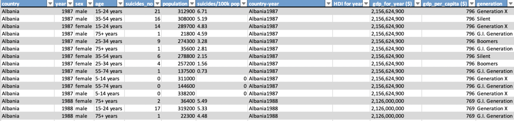

Cette Dataset compilée a été tirée de quatre autres ensembles de données liés par le temps et le lieu,
elle a été construite pour trouver des signaux corrélés à l'augmentation des nombre de suicide parmi différentes cohortes
à l'échelle mondiale, à travers le spectre socio-économique.
Suicide rate dataset (Aka SUIDATA) a été tiré des réferences suivantes :
- United Nations Development Program. (2018). Human development index (HDI). Retrieved from http://hdr.undp.org/en/indicators/137506
- World Bank. (2018). World development indicators: GDP (current US$) by country:1985 to 2016. Retrieved from http://databank.worldbank.org/data/source/world-development-indicators
- [Szamil]. (2017). Suicide in the Twenty-First Century [dataset]. Retrieved from https://www.kaggle.com/szamil/suicide-in-the-twenty-first-century/notebook
- World Health Organization. (2018). Suicide prevention. Retrieved from http://www.who.int/mental_health/suicide-prevention/en/
Suicide rate dataset (Aka SUIDATA) a été tiré des réferences suivantes :
- United Nations Development Program. (2018). Human development index (HDI). Retrieved from http://hdr.undp.org/en/indicators/137506
- World Bank. (2018). World development indicators: GDP (current US$) by country:1985 to 2016. Retrieved from http://databank.worldbank.org/data/source/world-development-indicators
- [Szamil]. (2017). Suicide in the Twenty-First Century [dataset]. Retrieved from https://www.kaggle.com/szamil/suicide-in-the-twenty-first-century/notebook
- World Health Organization. (2018). Suicide prevention. Retrieved from http://www.who.int/mental_health/suicide-prevention/en/


La liste des attributs du SUIDATA :
country , year , sex , age , suicides_no , population , suicides/100k pop , country-year , HDI for year , gdp_for_year , gdp_per_capita , generation